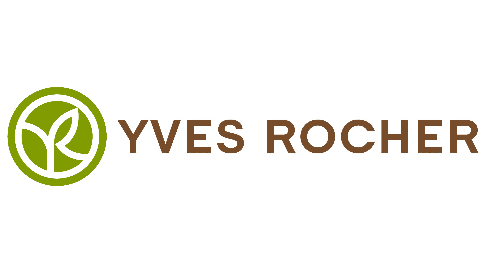
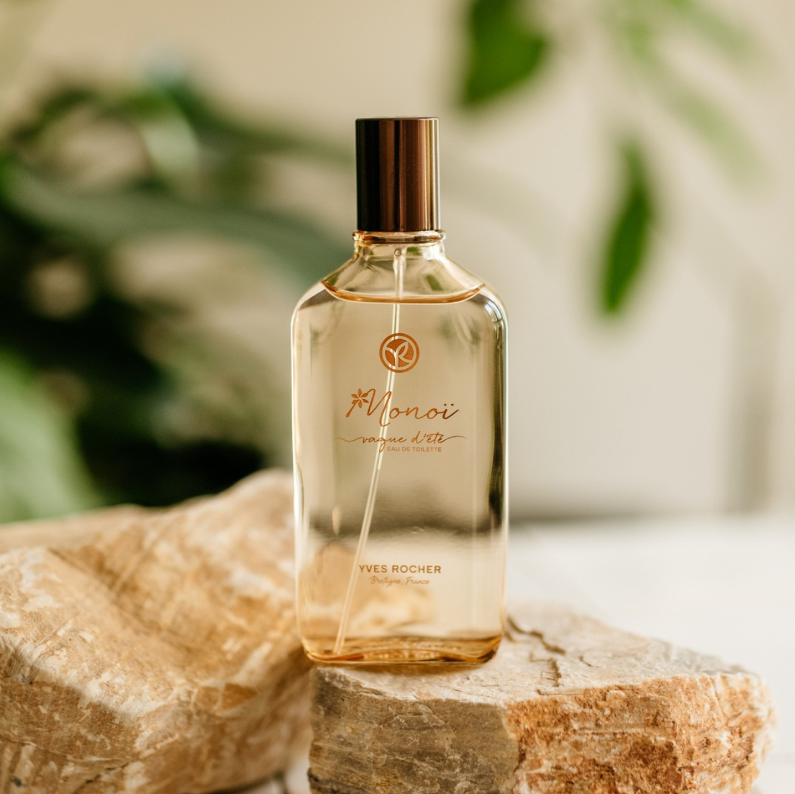
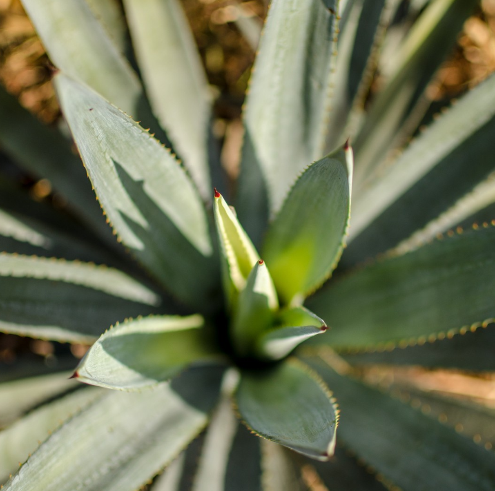
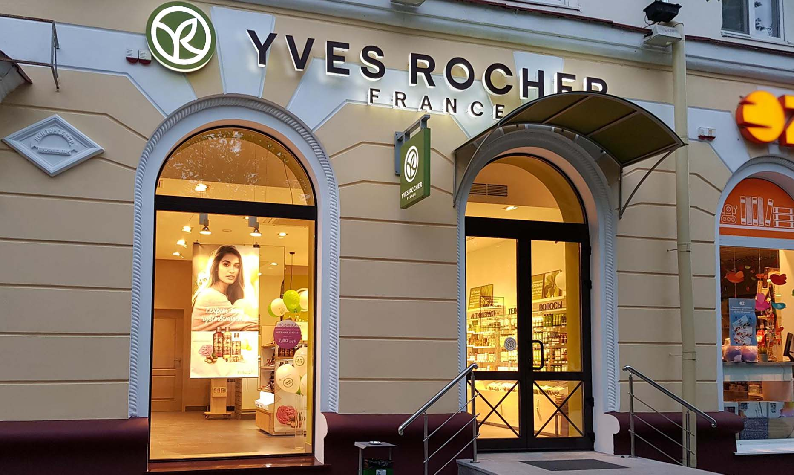
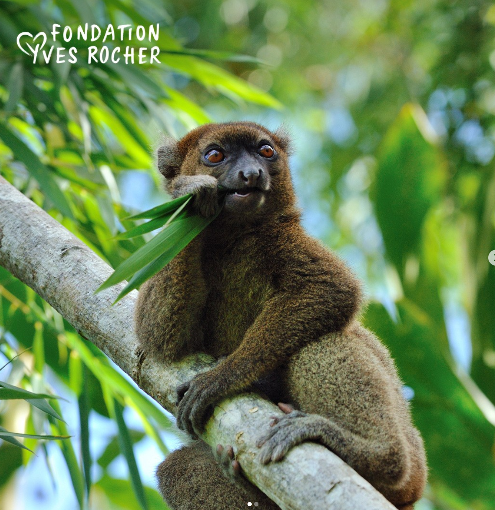
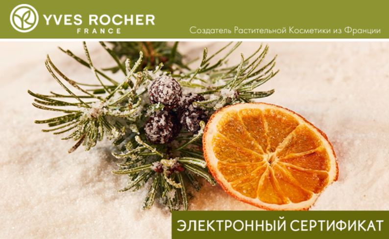

Высаживая деревья вместе с огромным сообществом сотрудников и партнеров, Фонд Ив Роше делает выбор в пользу жизни и биоразнообразия.
Зачем сажать деревья? Леса необходимы для стабильности почвы, защиты водных ресурсов, а также они играют ключевую роль в процессе изменения климата. Деревья — стражи растительного мира, убежища для животных и растений, символ надежды, долголетия и мудрости.
С момента создания Фонда Ив Роше мы поддерживаем его работу во всех начинаниях, привлекая к ней и своих многочисленных сотрудников и партнеров — делаем все возможное для восстановления лесов и сохранения нашего общего будущего.
Сегодня более 1 миллиона человек на планете сажают 1 дерево каждые три секунды. Спасибо, что вместе с нами сделали это возможным!
Стартовавший в 2007 году проект Фонда Ив Роше «Озеленим планету вместе» создан для возрождения лесов и плодородных почв, оттеснения пустынь и воссоединения людей с Природой.
Начало проекту положила встреча Жака Роше и лауреатки Нобелевской премии мира Вангари Маатаи. Тогда, в 2007 году, Жак Роше дал слово высадить 1 миллион деревьев в рамках проекта «Озеленим планету вместе».
За 13 лет активной работы Фонда Ив Роше один миллион деревьев превратился в 100 миллионов — теперь цель достигнута! И все благодаря настоящей приверженности своему делу сотрудников и партнеров Фонда.
Да, мы с вами уже высадили 100 миллионов деревьев. И теперь мы смело делимся еще одной грандиозной новостью: проект «Озеленим планету вместе» становится проектом «Растение для жизни»!
Yves Rocher
:) :) :) :) :)
Подарочные сертификаты:





Отличная возможность сделать нужный и желанный подарок.
Экономит время на выбор и поиски подарка.
Выбирайте любой из доступных номиналов от 20 до 100 бел.руб
Вы можете распечатать или отправить сертификат по электронной почте